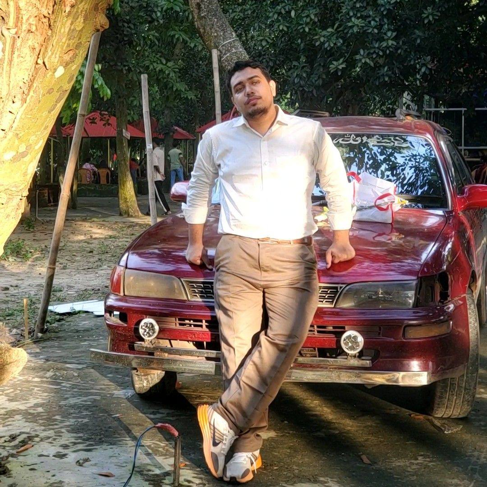

Discover the journey, expertise, and vision behind my work in robotics and autonomous systems.

A passionate Robotics and Mechatronics Engineering student at the University of Dhaka, driven by the intersection of hardware and intelligent software — building autonomous systems that interact with the physical world.
My focus is mobile robotics: ROS2, Gazebo, navigation, perception, and control. I also actively research Deep Reinforcement Learning within ROS2, using platforms like Isaac Sim.
Strong advocate for open-source contributions and collaborative learning.
University of Dhaka
2022 - Present
Murari Chand College
2019 - 2022
Path planning and obstacle avoidance algorithms
RL agents for robotic control and decision making
Object detection and tracking for robotics
Safe and intuitive HRI systems